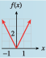

Subsection 4.3 Scale Factors
We have seen that adding a constant to the expression defining a function results in a translation of its graph. What happens if we multiply the expression by a constant? Consider the graphs of the functions
shown below, and compare each to the graph of \(y = x^2\text{.}\)

| \(x\) | \(y=x^2\) | \(f(x)=2x^2\) |
| \(-2\) | \(4\) | \(8\) |
| \(-1\) | \(1\) | \(2\) |
| \(0\) | \(0\) | \(0\) |
| \(1\) | \(1\) | \(2\) |
| \(2\) | \(4\) | \(8\) |
Compared to the graph of \(y = x^2\text{,}\) the graph of \(f (x) = 2x^2\) is expanded, or stretched, vertically by a factor of \(2\text{.}\) The \(y\)-coordinate of each point on the graph has been doubled, as you can see in the table of values, so each point on the graph of \(f\) is twice as far from the \(x\)-axis as its counterpart on the basic graph \(y = x^2\text{.}\)

| \(x\) | \(y=x^2\) | \(g(x)=\frac{1}{2}x^2\) |
| \(-2\) | \(4\) | \(2\) |
| \(-1\) | \(1\) | \(\frac{1}{2}\) |
| \(0\) | \(0\) | \(0\) |
| \(1\) | \(1\) | \(\frac{1}{2}\) |
| \(2\) | \(4\) | \(2\) |
The graph of \(g(x) = \dfrac{1}{2}x^2\) is compressed vertically by a factor of \(\dfrac{1}{2}\text{;}\) each point is half as far from the \(x\)-axis as its counterpart on the graph of \(y = x^2\text{.}\)
| \(x\) | \(y=x^2\) | \(h(x)=-x^2\) |
| \(-2\) | \(4\) | \(-4\) |
| \(-1\) | \(1\) | \(-1\) |
| \(0\) | \(0\) | \(0\) |
| \(1\) | \(1\) | \(-1\) |
| \(2\) | \(4\) | \(-4\) |
The graph of \(h(x) = -x^2\) is flipped, or reflected, about the \(x\)-axis; the \(y\)-coordinate of each point on the graph of \(y = x^2\) is replaced by its opposite.
In general, we have the following principles.
Scale Factors and Reflections.
Compared with the graph of \(y = f (x)\text{,}\) the graph of \(y = a f (x)\text{,}\) where \(a \ne 0\text{,}\) is
- stretched vertically by a factor of \(\abs{a}\) if \(\abs{a}\gt 1\text{,}\)
- compressed vertically by a factor of \(\abs{a}\) if \(0\lt\abs{a}\lt 1\text{,}\) and
- reflected about the \(x\)-axis if \(a\lt 0\text{.}\)
Example 4.3.12.
Graph the following functions.
- \(\displaystyle g(x) = 3\sqrt[3]{x}\)
- \(\displaystyle h(x) =\dfrac{-1}{2}\abs{x}\)
-
The graph of \(g(x) = 3\sqrt[3]{x}\) is a vertical expansion of the basic graph \(y = \sqrt[3]{x}\) by a factor of \(3\text{,}\) as shown below . Each point on the basic graph has its \(y\)-coordinate tripled.

-
The graph of \(h(x) = \dfrac{-1}{2}\abs{x}\) is a vertical compression of the basic graph \(y = \abs{x}\) by a factor of \(\dfrac{1}{2}\text{,}\) combined with a reflection about the \(x\)-axis. You may find it helpful to graph the function in two steps, as shown below.

Checkpoint 4.3.13.
- Graph the function \(f (x) = 2\abs{x}\text{.}\)
- How is the graph of \(f\) different from the graph of \(y =\abs{x}\text{?}\)
- 
Stretch \(y =\abs{x}\) vertically by a factor of 2.
Example 4.3.14.
The function \(A = f(t)\) graphed below gives a person's blood alcohol level \(t\) hours after drinking a martini. Sketch a graph of \(g(t) = 2f(t)\) and explain what it tells you.

To sketch a graph of \(g\text{,}\) we stretch the graph of \(f\) vertically by a factor of \(2\text{,}\) as shown below. At each time \(t\text{,}\) the person’s blood alcohol level is twice the value given by \(f\text{.}\) The function \(g\) could represent a person's blood alcohol level \(t\) hours after drinking two martinis.

Checkpoint 4.3.15.
If the Earth were not tilted on its axis, there would be 12 daylight hours every day all over the planet. But in fact, the length of a day in a particular location depends on the latitude and the time of year.
The graph below shows \(H = f(t)\text{,}\) the length of a day in Helsinki, Finland, \(t\) days after January 1, and \(R = g(t)\text{,}\) the length of a day in Rome. Each is expressed as the number of hours greater or less than 12. Write a formula for \(f\) in terms of \(g\text{.}\) What does this formula tell you?

\(f(t)\approx 2g(t)\text{.}\) On any given day, the number of daylight hours varies from \(12\) hours about twice as much in Helsinki as it does in Rome.